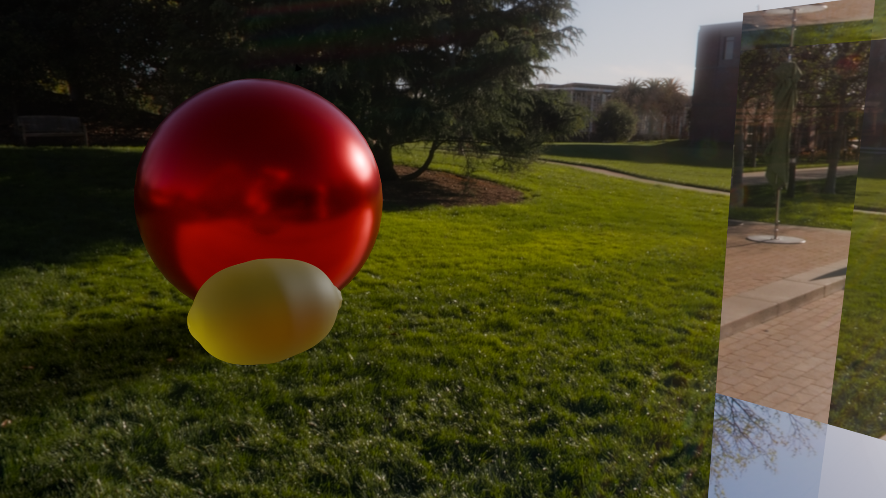

Production Rendering
Mirror ball and cube in photographed environment

Glossy reflective red ball and glass cube in photographed environment

Custom scene (lemon)
I loaded in a lemon shaped mesh.
I gave it a yellow base color and 65% roughness. A real lemon
has a dull waxy look which I was trying to imitate.
I use 40% Random Walk subsurface scattering to imitate the translucence of the peel.
